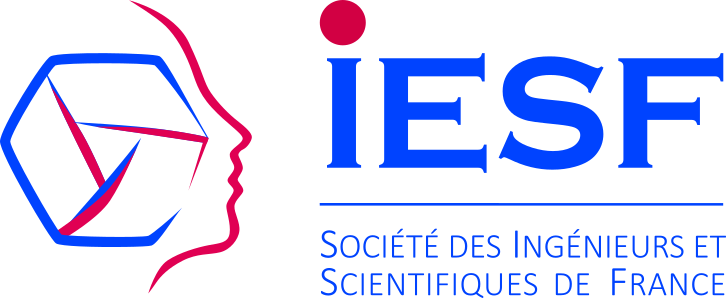

IESF
Since 2024 I have been a member of the "Doctors-Engineers" committee of Ingénieurs et Scientifiques de France (IESF), the historical public-interest association (founded 1860) representing engineers and researchers in France as an independent, non-partisan federation.
After contributing to a collective note for an intervention at the Ministry of Higher Education and Research, the committee organised the 2025 Scientists Assembly on the relations between research and the civil, industrial, and political spheres – following the model of the earlier Engineering Students Assembly on hydrogen – bringing PhD holders and candidates from every scientific field together, to formulate recommendations on how to bring science and society closer.
Since the assembly's report, we run restitutions and workshops in varied settings – research labs, public institutions, science-mediation associations, and political parties – to open debate and work towards operationalizing the recommendations. In parallel, we began reflexive scientific studies of the deliberative process itself, presenting first results at the 2nd UNIDELIB international conference (IEP Fontainebleau, UPEC, 2026).
